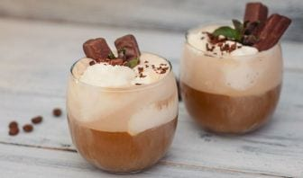
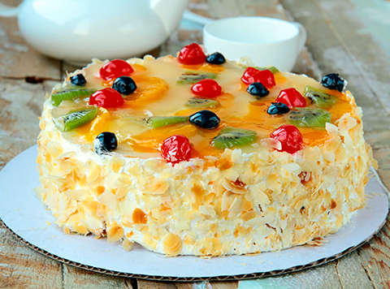
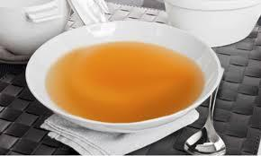

24 cócteles fáciles que puedes hacer en casa para no echar de menos los bares
2021.06.26 11:10
Webedia Directo al Paladar Menú Nuevo Buscar Pinterest Facebook Flipboard Instagram Youtube POSTRES MENÚ SEMANAL SELECCIÓN
Partners
Triunfa Con Buitoni Cocina con Maggi Destaca con Pascual24 cócteles fáciles que puedes hacer en casa para no echar de menos los bares
Sin comentarios HOY SE HABLA DE Menú Dieta Refresco España Alimentos Ofrecido por PascualCómo preparar unas crepes perfectas y dos ideas (dulce y salada) para rellenarlas
Ofrecido por MaggiPor qué mucha gente tiene la tortilla de patata y calabacín como su receta favorita de este clásico
Ofrecido por BuitoniEmpanadas criollas: la edad dorada de una elaboración de origen humilde
Compartir 24 cócteles fáciles que puedes hacer en casa para no echar de menos los bares
Facebook Twitter Flipboard Email Síguenos Twitter Facebook Youtube Instagram Pinterest Flipboard 10 abril 2020, 18:01 Miguel Ayuso @mayusorejas ¡Gracias! 105 votosSi hace solo unas semanas nos hubieran dicho que todos los bares de España iban a estar cerrados no nos lo hubieramos creído. Pero aquí estamos, en plenas vacaciones de Semana Santa y sin poder tomar una copa como Dios manda. O eso pensamos, porque no hay nada que nos impida preparar unos cócteles de calidad en casa.
Hacer buenos combinados no tiene demasiado misterio: la única máxima reside en respetar a rajatabla las proporciones, ser cuidadoso en el manejo de copas y hielos y usar destilados de cierta calidad. En muchos casos, ni siquiera se necesita una coctelera: aunque este instrumento es muy útil, la mayoría de los cócteles se pueden utilizar mezclando bien los ingredientes en una jarra.
Esta selección de cócteles más o menos clásicos te ayudará a pasar una Semana Santa más entretenida.
En Directo al Paladar Cómo disfrutar al máximo de la cerveza en casa: cómo servirla y qué herramientas necesitas para tirarla a la perfección1. Bloody Mary
El Bloody Mary es uno de los cócteles más populares de todos los tiempos. No es seguro que fuera exactamente así, pero parece ser que fue un barman llamado Fernand Petiot , quien inventó este combinado en el Harry’s New York Bar de París en 1920, mezclando a partes iguales vodka y zumo de tomate. Posteriormente, cuando Petiot se trasladó a los Estados Unidos como jefe del Bar King Cole en el Hotel Saint Regis de Nueva York, cambió la fórmula refinando el cóctel, añadiendo sal y pimienta, zumo de limón, y toques de salsa Worthestershire (Perrins) y unas gotas de salsa Tabasco rojo.
Ingredientes
Para 2 personas Vodka 70 ml Zumo de tomate 210 ml Zumo de limón 15 ml Salsa Tabasco dos gotas Salsa Worcestershire tres gotas Pimienta negra molida ApioCómo hacer bloody mary
Dificultad: Media Tiempo totalA la hora de condimentar este cóctel, es fundamental un buen toque de salsa Perrins, muy poco Tabasco (dos gotas) para no pasarnos de picante agresivo y dos o tres vueltas de pimienta negra que completarán el efecto picante, para que quede en su punto. Opcionalmente se puede añadir un chorrito de caldo concentrado de carne para potenciar el sabor. Agregamos también el zumo de limón, aproximadamente 15 ml y agitamos con un cubo de hielo para mezclar bien y enfriar. Continuamos con el vodka, utilizando la medida del jigger pequeño o grande, en función de la proporción de alcohol que se desee incorporar. Lo habitual es utilizar una tercera parte de la cantidad de zumo de tomate que se vaya a usar. Para 210 ml de tomate, utilizaremos 70 ml de vodka y la proporción quedará en su punto. No obstante, con la experiencia de Kike el lo hace a ojo (y lo clava). Para incorporar el apio y la sal, el barman nos recomienda utilizar sal de apio, que aporta el inconfundible sabor de la hortaliza, sin saturar (evitando de paso que su sabor nos pueda repetir). Además así incorporamos el toque salado. No obstante, para terminar la preparación, vamos a meter una ramita de apio dentro del vaso dejando que asome por fuera que servirá para remover nuestro Bloody Mary, como si fuera una cucharilla. Ya sólo falta el zumo de tomate y agitar para que esté en su punto. El barman de Soda 917 nos recomienda airear bien el Bloody Mary, lanzándolo desde la coctelera al vaso dos o tres veces para terminar sirviéndolo en la copa, finalizando con la ramita de apio fresco. En caso de añadir hielo, hay que hacerlo al terminar de servir, sin echar más de dos cubitos para que nuestro Bloody Mary no quede aguado.
¡Gracias! 105 votos2. Tom Collins
El Tom Collins es uno de los más populares cócteles de ginebra y uno de los más sencillos de elaborar, pues, a diferencia de la mayoría de combinados, se puede confeccionar sin la necesidad de un vaso mezclador o coctelera.
Ingredientes : 50 ml de ginebra, 100 ml de zumo de limón, 100 ml de soda, 1 cucharada de azúcar, hielo. Preparación : Vierte en el vaso el zumo de un limón (aproximadamente 100 ml), una cucharada de azúcar o sirope, dos medidas de ginebra y, finalmente, la soda (te cabra medio botellín). Remueve bien para que se diluya el azúcar. Añade tres o cuatro o cubitos de huelo y una rodaja de limón y a disfrutar.2. Clericot o clericó
Ingredientes : 33cl de vino blanco espumoso, 1 melocotón, 2 ciruelas,1 limón, 5ml de crema de Cassis y hielo Elaboración : Vamos a cortar en dos el melocotón y las ciruelas. En seguida los cortamos en trocitos y colocamos en una jarra. Agregamos unas gotas de jugo de limón y la crema de Cassis. Revolvemos y agregamos hielo. Vertemos poco a poco el vino espumoso revolviendo todo el contenido con cuidado. No queremos eliminar muchas burbujas por lo que hay que evitar revolverlo como si fuera una "cuba". Agregamos más hielo y servimos en copas de tipo flautas o en vasos cortos tipo old fashion según lo que tengamos disponible.Más detalles, aquí
3. Rebujito
El rebujito es el típico cóctel de la Feria de Abril . Aunque no es muy popular fuera de Andalucía es una bebida refrescante, ideal para el aperitivo.
Ingredientes : 75 ml de Vino Manzanilla, Fino, Montilla Moriles o similar, 500 ml de refresco de lima o gaseosa, 4 ramitas de Hierbabuena y Hielo abundante Elaboración : Preparar un buen rebujito no tiene mucha complicación, pero hacer que quede delicioso, suave, refrescante y no tenga demasiado alcohol para que no sea "cabezón" ni nos emborrache es una cuestión que no conviene olvidar. El rebujito se bebe muy fácil y sin darnos cuenta podemos beber de más. Por ese motivo, me encanta hacer esta receta en la que la proporción de alcohol y refresco es más ligera, por lo que se puede tomar más cantidad sin temor a los efectos de un consumo excesivo. Mezclamos el vino fino con el refresco carbónico con sabor a lima o limón. Los utilizados más habitualmente son el 7Up y el Sprite, pero podéis utilizar los que más os gusten. Lo importante es que estén muy fríos y que no tengan un sabor muy potente que pueda cambiar el sabor de la mezcla. Conviene escaldar unos segundos la hierbabuena para eliminar toda impureza que pueda tener y para que su sabor no tape en exceso el de los dos ingredientes fundamentales. Una vez escaldada y refrescada, separamos los palos de las hojas y añadimos estas últimas a la jarra, añadiendo hielos para que la bebida resultante se mantenga bien fría.4. Agua de Valencia
Una de las bebidas más refrescantes de nuestro país es el Agua de Valencia y también una de las más populares, especialmente en la zona del Mediterráneo y en San Juan , aunque no hay ninguna razón para no hacernos una estos días.
Ingredientes : Zumo de naranja, ginebra, vodka y champagne o cava. Elaboración : Comenzamos llenando el 33% de una jarra con zumo de naranja natural, agregamos un 16% de ginebra y otro 16% de vodka. Por último incorporamos un 33% de cava o champagne, removemos suavemente y trasladamos a la nevera donde la dejamos enfriar por espacio de una hora antes de servir y disfrutar de este maravilloso cóctel siempre que queráis.5. Café irlandés
Aunque asociamos los cócteles a bebidas frías, los hay también calientes, y muy populares. Sin duda, el más conocido es el café irlandés , un cóctel adulto pero accesible a todo tipo de consumidores , gracias a la equilibrada combinación de infusión amarga, whisky, azúcar y melosa nata.
Ingredientes: 2-2,5 partes de whisky irlandés, 4 partes de café filtrado, 1-2 cucharadas, aproximadamente, de azúcar blanco o moreno, 50 ml, aproximadamente, de nata o crema batida, semimontada.
Elaboración: Primero se templa el vaso con agua caliente, se prepara un café de filtro o tipo americano, y se combina con el whisky y el azúcar, removiendo bien hasta su disolución. Esta mezcla se lleva al vaso, previamente vaciado. A continuación hay que montar la nata dejándola con textura de crema batida, muy melosa, sin burbujas de aire visibles y siempre sin formar picos. La clave está en poder verter la nata poco a poco, con la ayuda del dorso de una cucharilla, para lograr esa cobertura sedosa que imita la espuma de una cerveza negra.
6. Vieux Carré
Este cóctel clásico, pero poco conocido, tiene carácter y bastante contenido alcohólico (pues se elabora mezclando solo licores). Tiene puntos amargos y dulces, pero muy balanceados por lo que, pese a su elevada graduación, es muy sutil para beber. Así que cuidado con repetir.
Ingredientes: 3 cl de bourbon, 3 cl de coñac, 3cl de vermú, una cucharadita de Bénedictine, tres gotas de bitter Peychaud, dos gotas de angostura, naranja y romero para decorar y aromatizar.
Elaboración: Este coctel se preparara en vaso mezclador. Si tenemos brandy pero no coñac, como es un poco más dulce y más expresivo, en vez de partes iguales de bourbon y brandy, pondríamos 4 y 2, para contrarrestar. Se añade hielo al vaso mezclador y se vierten todos los licores, el bitter y la angostura. Removemos bien con cuchara de cotel y lo servimos en un vaso ancho y bajo con hielo. Se hace un twist de naranj para aportar aromas frescos y se coloca un poco de romero, para dar aroma y contrastar los colores.
7. Mimosa de frambuesa
Una variación del clásico de los brunchs de moda sustituyendo el zumo de naranja por frambuesas. El cóctel mimosa de frambuesa es fresco, frutal, ligero y muy colorido , es además sencillísimo de preparar si tenemos frambuesas congeladas listas para usar.
Ingredientes : 100g de frambuesas congeladas, 2 cucharadas de azucar de caña líquido, 1 botella de cava. Preparación : Hay que tener el cava o champagne muy frío para servir al momento de prepararlo. ponemos las frambuesas en una licuadora o procesador de alimentos por un minuto hasta que queden como puré. Vaciamos esto en cada copa de tipo flauta. Añadimos un poco de azúcar de caña líquida. Terminamos con el champagne o cava y mezclamos despacio. Servimos inmediatamente.8. Dry Martini
Según nuestro más conocido bartender, Javier De las Muelas , el Dry Martini es el primer cóctel que se debe aprender . “Es muy sencillo, pero precisamente lo más sencillo es lo más difícil”, asegura. Es, además, el cóctel más icónico.
Ingredientes : una copa de ginebra, dos golpes de vermut seco (preferiblemente Nolly Prat o Martini Extra Dry), un twist de limón (opcional) Preparación : Para elaborar este cóctel se necesitas un vaso mezclador y una copa Martini, que previamente habremos metido en el congelador. De las Muelas deposita la copa con suavidad en una bandeja de plata cubierta con un paño de hilo, añade una aceituna (manzanilla o verde sevillana son las adecuadas) y, a continuación, escancia sobre el vaso mezclador lleno de cubitos de hielo una copa de ginebra helada y dos golpes del vermut seco. Remueve todo ello suavemente durante 15 segundos con una cuchara, lo agita dos segundos más y lo sirve en la copa. Tras un twist o no de piel de limón se deja que los invitados tomen su copa de la bandeja. “Se deja que desvirguen la copa”, apunta De las Muelas.9. Daiquiri
Cuenta la historia más extendida sobre la creación del Daiquiri que el cóctel fue creación de un ingeniero estadounidense , que trabajaba en una mina próxima a la playa de Daiquiri, junto a Santiago de Cuba. El expatriado recibió la visita de unos amigos y, al ver que se había quedado sin ginebra, que es lo que solía beber, recurrió a una botella de ron local y mezcló la bebida con zumo de las limas de un árbol que tenía en el jardín.
Ingredientes : 50 ml de ron blanco, 25 ml de zumo de lima, 1 cucharilla de azúcar, hielo. Preparación : Con ayuda del vaso medidor vertemos en la coctelera una parte de zumo de lima recién exprimido, el azúcar y dos partes de ron blanco (en este orden, pues siempre los “diluyentes” se colocan antes). Después, añadimos cuatro o cinco cubos de hielo –preferiblemente industrial, para evitar malos aromas de la nevera–. Tapamos y agitamos la coctelera durante 15 segundos, sirviendo el cóctel con ayuda del filtro de la propia coctelera o el colador en un vaso de cóctel.10. Cóctel frutal con sidra y tequila
Este cóctel frutal con tequila es una bebida muy dulce que gustará a los amantes de las bebidas más afrutadas. La sidra se puede sustituir por cava si no se quiere un dulzor tan acentuado.
Ingredientes : 750ml de sidra, 20cl de tequila reposado, 10cl de Cointreau, una cucharada de azúcar de caña líquido, una taza de uvas negras, media taza de melocotón picado en almíbar y mucho hielo. Preparación : Mezclamos las uvas lavadas con el melocotón, el Cointreau y el cava. Revolvemos y dejamos reposar unos 30 minutos en refrigeración. Retiramos del refrigerador y añadimos ahora el tequilla, el azúcar de caña líquido y mucho hielo. Removemos bien para que todos los sabores se puedan integran mejor. Servimos directamente en vasos cortos tipo y con más hielo picado.11. Cóctel de cava con flor de hibiscus
Aunque en España como mucho se ve en infusiones, el hibiscus es una flor muy usada en otras gastronomías. Además de su aroma floral y dulzón tiene la particularidad de teñir de un tono rojizo o rosado la bebida , así que el resultado del cóctel es perfecto para lucir en la mesa.
Ingredientes : Flores de hibiscus deshidratadas o en almíbar, 1 botella de cava. Preparación : Simplemente hay que colocar una flor por copa y servir el cava o champán directamente sobre ellas. En pocos instantes liberará su color y aroma al rehidratarse, y al terminar la bebida incluso podemos comerla, estará muy dulce.12. Margarita
La Margarita es un cóctel a partir de tequila, triple seco y zumo de lima que se sirve en las barras de todo el mundo. Es, sin duda, uno de los combinados que debe manejar a la perfección cualquier bartender que se precie, pero cualquiera puede prepararlo en casa siguiendo unas sencillas reglas.
Ingredientes : 75 ml de tequila, 25 ml de triple seco, 25 ml de zumo de lima, hielo, sal. Preparación : En primer lugar, debemos preparar las copas en la que vamos a servir el cóctel. Debemos pasar la lima por el borde de la copa y colocar esta boca abajo en un plato con sal, para lograr el mítico borde salino que caracteriza al cóctel. Una vez tengamos las copas listas, con ayuda del vaso medidor vertemos en la coctelera el zumo de lima recién exprimido, el tequila, y el triple seco (en este orden, pues siempre los “diluyentes” se colocan antes). Después, añadimos cuatro o cinco cubos de hielo. Tapamos y agitamos la coctelera durante 15 segundos, sirviendo el cóctel con ayuda del filtro de la propia coctelera o el colador.13. Margarita de piña
En esta variante de la Margarita , la dulzura de la piña fusiona perfectamente bien con el tequila para lograr un equilibrio que nos va a llevar hasta largas horas de la noche.
Ingredientes : 50 ml de tequila, 25 ml de triple seco, 50 ml de zumo de piña, 20 g de piña en almibar, 1 limón, hielo. Preparación : Colocamos en una jarra los trozos de piña junto con el zumo del limón y el Cointreau (o cualquier otro tirple seco). Dejamos reposar unos 15 minutos y agregamos el zumo de piña. Batimos bien con un batidor manual para que se integren bien estos ingredientes. Enseguida añadimos el tequila y volvemos a mezclar bien todo. Vaciamos hielo en el vaso de una licuadora y vertemos toda la preparación anterior. Pulsamos a velocidad alta por un minutos, hasta que el hielo y la piña hayan quedado triturados y obtengamos una ligera espuma. Servimos en copas de cóctel y decoramos con una rodaja de limón o un trocito de piña. Las medidas son para una copa, y se pueden multiplicar según el número de invitados.14. Mandarina Blast
El Mandarina Blast es un delicioso cóctel que se elabora con una de las bebidas alcohólicas más populares de México después del tequila: el mezcal (aunque también se puede elaborar con tequila). Como su propio nombre indica, contiene mandarina. El mezcal suele combinar muy bien con cítricos por lo que la integración de mandarina a este cóctel resulta ideal para obtener un resultado muy aromático y delicioso.
Ingredientes : 100 ml de mezcal, 1 mandarina, 175 ml de agua caliente, canela en rama, 15 ml de azúcar de caña líquido, hielo. Preparación : Cortamos la cáscara de la mandarina y la ponemos a infusionar con el agua caliente por unos 30 minutos. Al cabo de este tiempo añadimos la rama de canela y el azúcar de caña líquido. Revolvemos muy bien y dejamos infusionar por otros 30 minutos más. Al cabo de esa primer hora, retiramos las cáscaras de mandarina de la infusión y la pasamos por el colador de ser necesario para retirar los eventuales trocitos de la piel de mandarina que se hayan podido desprender. Agregamos el mezcal y volvemos a mezclar muy bien. Servimos con mucho hielo. Las medidas son para una copa, y se pueden multiplicar según el número de invitados.15. Manhattan
El Manhattan es el rey de los cócteles con whisky . Cuentan que nació en Nueva York, lógicamente, cuando la madre de Winston Churchill, Jenny Jerome, organizó una fiesta en honor a Samuel Tinden, un amigo de su padre que había sido elegido gobernador.
Ingredientes : 2/3 de whisky de centeno o bourbon, 1 golpe de angostura, 1/3 de vermú rojo. Preparación : Para disfrutarlo como es debido, advierte De las Muelas, “este cóctel ha de ser transparente como un cristal y helado como un tempano”. Para lograr esto se deben servir los ingredientes en el vaso mezclador junto con abundante hielo. A continuación, remueve durante 15 segundos y sirve en una copa de cóctel. Como remate, decora con una guinda roja.16. Singapore Sling
Este cóctel de ginebra, para los amantes de los sabores más dulces, fue inventado a principios del siglo XX en Singapur por el barman de origen chino Ngiam Tom Boon . Se caracteriza por ser muy refrescante.
Ingredientes : 3 cl de ginebra, 1,5 cl de licor de cereza, 0,75 cl de licor triple seco (Cointreau), 1 cl de granadina, 1,5 cl de zumo de limón y 12 cl de zumo de piña. Preparación : Para hacer el cóctel, se vierten los ingredientes uno por uno en la coctelera, repleta de hielo, y se agita todo muy bien. La presentación debe hacerse en un vaso alto en el que no pueden faltar los hielos. Se puede adornar con una cereza y un trocito de piña.17. Blackberry Gin Fizz
Una buena forma de recordar las sensaciones del verano en pleno invierno es dejándose llevar por un cóctel que nos traslada a la época estival. Lo hace gracias a sus traviesas burbujas y a través de su fresco aroma afrutado.
Ingredientes : Ginebra , moras, zumo de limón, azúcar, soda y albahaca. Preparación : Tan solo hay que triturar unas 5 moras frescas con dos cucharadas de azúcar y colar la mezcla. Esto asegurará el sabor dulce y afrutado de la bebida. Se añade una parte de ginebra y una de limón y se mezcla todo muy bien. Por último se suma el hielo y se echa la soda para llenar los vasos. Para decorar, se recomienda usar unas ramitas de albahaca o unas rodajas de limón.18. Negroni
Cuenta la historia, de origen discutido (como todas), que el conde Camillo Negroni era un gran aficionado al Americano, el famoso cóctel de vermú, Campari y soda. Un día, cansado de tomar siempre lo mismo, pidió al barman del Caffè Casoni , en Florencia, que cambiara la soda por ginebra, una bebida que acababa de conocer en un reciente viaje a Londres. Creo así uno de los cócteles más famosos y más versátiles de todos los tiempos.
Ingredientes : 1/3 de ginebra, 1/3 de vermú rojo, 1/3 de bitter Campari Preparación : Se vierte la ginebra, el vermú y el Campari en un vaso bajo y ancho con un cubito de hiel. Mezclas bien y decoras con una o dos pieles de naranja. Si vas a hacer varios, también se puede preparar en un vaso mezclador y servirlo en copa de cóctel, sustituyendo la naranja por una guinda roja.19. Gimlet
Aunque los orígenes del Gimlet no están del todo claros, algunos los sitúan en el año 1928 y hacen referencia a los carpinteros de la época. Estos, que bebían la mezcla de zumo de lima y ginebra , habrían bautizado al cóctel con el nombre de barrena (gimlet en inglés) debido a la intensidad de la bebida.
Ingredientes : 2/3 de ginebra, 1/3 de zumo de lima Preparación : Este cóctel debe preparar en vaso mezclador, con mucho hielo. Solo hay que agitar la mezcla bien y servirla preferiblemente en copa Martini con una guinda verde.20. Mojito
El mojito cubano es un cóctel dulce y refrescante , gracias a la acidez de la lima y el aroma de la hierbabuena. Un clásico que gusta a todo el mundo y, aunque es muy veraniego, todos agradecerán para celebrar la llegada del año nuevo.
Ingredientes : 1 Parte de ron, 2 Partes de soda, 1 parte de zumo de lima, azúcar blanco y hierbabuena fresca. Preparación : Echamos dos cucharaditas de azúcar blanco en un vaso alto, a ser posible un poco más ancho que el de tubo, para poder remover bien el hielo. Después vertemos el zumo de lima, o exprimimos media lima troceada sobre el azúcar con la ayuda del mortero. Ahora, antes de echar la hierbabuena, podemos añadir la soda o sifón. Después colocamos una ramita de hierbabuena, removiendo con fuerza, pero sin triturar, para sacarle su aroma. Ya por último, vertemos el ron, añadimos el hielo, la pajita, una ramita decorativa y a disfrutar.21. Caipirinha
Después del mojito, uno de los cócteles del verano es la caipirinha , pero nadie dice que no podamos tomarlo en una noche de fiesta en pleno invierno. La caipirinha comparte con el mojito un buen número de ingredientes y tienen una preparación similar, solo que la caipirinha no lleva hierbabuena y, sobre todo, se prepara con un destilado muy especial, la cachaça , una bebida similar al ron, pero que se obtiene de la destilación del jugo de la caña de azúcar fermentado
Ingredientes : Cachaça, una lima, dos cucharadas de azúcar blanco y hielo Preparación : Corta la lima en dos. Después, una mitad en dados y la otra mitad en rodajas. Los dados van al fondo del vaso bien machacados con las dos cucharadas de azúcar, mientras que las rodajas se reservan para decorar.Una vez le hemos sacado todo el jugo a la lima del fondo, llenamos el vaso con hielo picado. Por último, vertemos cachaça hasta llenar el vaso (que no debe de ser muy grande), removemos ligeramente y servimos con dos o tres pajitas. Las pajitas son importantes porque esta bebida se debe tomar del fondo, donde está el jugo de lima y el azúcar, pues si bebemos de la parte de arriba solo encontraremos el sabor fuerte e inconfundible de la cachaça.22. Tequila Sunrise
El Tequila Sunrise es un cóctel alegre y colorido , es suave a la par que delicioso. Su nombre, que traducido significa amanecer de tequila, hace referencia a que al servirse en un vaso, los ingredientes de mayor densidad se van a hacia el fondo, dejando una gradación de colores muy parecida a la de un amanecer.
Ingredientes : 3 partes de tequila, 6 partes de zumo de naranja, 1 parte de granadina Preparación : Llenamos con hielo un vaso alto, preferiblemente picado o no en trozos muy grandes, luego añadimos el tequila, el zumo de naranja –si puede ser natural, mejor– y por último vertemos la granadina, dejando que se vaya al fondo lentamente. Si vemos que se posa demasiado, podemos remover muy suavemente antes de servir, pero con mucho cuidado de no pasarse, o la bebida dejará tener el aspecto adecuado. Decoramos con una rodaja de naranja, un par de pajitas y, opcionalmente, una sombrillita y una guinda.23. Long Island Iced Tea
El origen del Long Island Iced Tea es incierto. Algunos afirman que se sirvió por primera vez en la década de los años 20 en una pequeña localidad llamada Long Island, en Tennessee , aunque que otros aseguran que fue inventado por Robert "Rosebud" Butt en 1972, mientras trabajaba en el Oak Beach Inn de Long Island, Nueva York. En lo que sí están todos de acuerdo es que su nombre se debe al parecido de esta bebida con el té helado , aunque no lleva ni una gota de té.
Ingredientes : 1 parte de ron blanco, 1 parte de tequila, 1 parte de ginebra, 1 parte de Cointreau o triple seco, 1 parte de vodka, 2 partes de limón y 5 partes de refresco de cola. Preparación : El Long Island Iced Tea se debe preparar directamente en un vaso alto con hielo. Simplemente debemos juntar los cinco licores blancos en el vaso, añadir el zumo de limón, el refresco de cola y remover con cuidado. Se sirve acompañado de una rodaja de limón, un poco de hierbabuena y una pajita si se desea.
Suscríbete para recibir cada día nuestras recetas, información sobre nutrición y actualidad sobre gastronomía.
24. Cosmopolitan
El Cosmopolitan nació a raíz de un concurso convocado por la revista del mismo nombre. Fue a mediados de la década de os 80 cuando, en el Julie´s Super Club de San Francisco, apareció por vez primera en una carta, y rápidamente se hizo un favorito de la cantante Madonna. Su consagración definitiva llegó con la serie Sexo en Nueva York , cuyas protagonistas eran devotas de la bebida.
Ingredientes : 3 partes de vodka, 2 partes de Cointreau o triple seco, 2 partes de zumo de arándanos, 1 parte de zumo de lima. Preparación : Para preparar este cóctel se sirven los ingredientes en una coctelera junto con abundante hielo y se baten durante 15 segundos. Se sirve en una copa Martini y se da un twist de lima para acabar de dar el toque necesario. Imágenes | Pexels En Directo al Paladar | 11 cócteles sin alcohol para quienes no pueden beber .
En Directo al Paladar | Cómo hacer los tres cócteles más clásicos en casa
Directo al Paladar en Instagram
Seguir
Compartir 24 cócteles fáciles que puedes hacer en casa para no echar de menos los bares
Facebook Twitter Flipboard E-mail Temas Otras bebidas alcohol Cócteles recetas de cóctelesCompartir
Facebook Twitter Flipboard E-mail 1Si te ha gustado, puedes recibir más en tu correo
Te enviamos nuestra newsletter una vez al día, con todo lo que publicamos
Comentarios cerrados Temas de interés Tarta tres cocholates Thermomix brownie bizcocho de yogur crema pastelera Roscón de Reyes ensalada césar pollo al horno lentejas tortilla de patatas croquetas torrijas fideuá InicioPartners
Triunfa Con Buitoni Cocina con Maggi Destaca con Pascual Recetas con Thermomix Recetas de Aperitivos Recetas de Ensaladas Recetas de Postres Recetas Vegetarianas Utensilios Postres fáciles y rápidos Recetas de invierno Horno Huevos Azúcar HarinaVer más temas
Síguenos Twitter Facebook Youtube Instagram Pinterest Flipboard Directo al Paladar TV Lo mejor Equipo editorial Contacta con nosotrosMás sitios que te gustarán
Espinof Xataka Poprosa VitónicaExplora en nuestros medios
Tecnología Móviles, tablets, aplicaciones, videojuegos, fotografía, domótica Xataka Xataka Móvil Xataka Foto Xataka Android Xataka Smart Home Xataka Windows Xataka Ciencia Applesfera Genbeta Magnet Mundo Xiaomi Videojuegos Consolas, juegos, PC, PS4, Switch, Nintendo 3DS y Xbox 3DJuegos Vida Extra IGN Millenium Entretenimiento Series, cine, estrenos en cartelera, premios, rodajes, nuevas películas, televisión Sensacine Espinof Gastronomía Recetas, recetas de cocina fácil, pinchos, tapas, postres Directo al Paladar Estilo de vida Moda, belleza, estilo, salud, fitness, familia, gastronomía, decoración, famosos Vitónica Trendencias Trendencias Hombre Decoesfera Compradiccion Poprosa Latinoamérica Publicaciones de México Xataka México Directo al Paladar México Sensacine México 3DJuegos México Aviso legal Condiciones de uso Condiciones de uso de cookies Publicidad InicioReciente
La quesería de Jaén, montada de la nada, que se ha coronado en los 'Oscar del Queso' Costilla de cerdo agridulce con melocotones: receta de aires asiáticos para viajar en la mesa Nuestros favoritos Las nueve mejores recetas de empanadillas de Directo al Paladar Nuestros favoritos Las básculas de cocina mejor valoradas de Amazon desde 7,99 euros La mercancía más codiciada en el mercado negro ya no es el paladio ni el oro. Son los pistachos en Magnet Calamares a la malagueña, receta del guiso marinero más sabroso que hemos probado en los últimos tiempos El rooibos se convierte en el primer alimento africano con denominación de origen: qué es y por qué importa de dónde venga 29 recetas para alimentarnos de forma saludable y equilibrada en el menú semanal del 28 de junio Dónde comerse los mejores espetos de sardinas de Málaga (y de la Costa del Sol) Receta de vichyssoise con compota de manzana y crujiente de jamón Nuestros favoritos Espaguetis con pesto de almendras, tomate y rúcula: receta vegana que disfrutarán todos en casa Los pequeños electrodomésticos con los que preparar un auténtico “desayuno de campeones” Wetaca sufre un fallo de calidad y pide a los clientes que tiren sus táperes, pero no revela qué ha encontrado en los análisis Cómo hacer el entrecot a la pimienta perfecto, receta sencilla Las siete mejores formas de abrir una botella de vino cuando no tienes sacacorchos El gazpacho ¿en vaso o en plato? El debate que enfrenta, incluso, a los andaluces Receta de paté de pollo y naranja, para lucirte en el aperitivo o hacer un buen regalo Nuestros favoritos Cómo hacer yogur casero: consejos para quede perfecto y 27 recetas en las que usarlo Coliflor gratinada al horno con queso, receta sencilla para enamorarte de esta saludable verdura Dani García enviará a domicilio un menú MasterChef con los platos del programa mientras se está emitiendo (por 45 euros)Ver más artículos
Directo al Paladar TV
Cómo hacer la mejor receta de empanadas de jamón y queso al horno Receta de empanadas criollas caseras, fáciles y rápidas SANGRÍA como DIOS MANDAVer más vídeos
Síguenos Twitter Facebook Youtube Instagram Pinterest FlipboardEn Directo al Paladar hablamos de
Recetas con Thermomix Recetas de Aperitivos Recetas de Ensaladas Recetas de Postres Recetas Vegetarianas Utensilios Postres fáciles y rápidos Recetas de invierno Horno Huevos Azúcar HarinaVer más temas
SubirWebedia
Tecnología
Xataka Xataka Móvil Xataka Foto Xataka Android Xataka Smart Home Xataka Windows Xataka Ciencia Applesfera Genbeta Magnet Mundo XiaomiVideojuegos
3DJuegos Vida Extra IGN MilleniumEntretenimiento
Sensacine EspinofGastronomía
Directo al PaladarEstilo de vida
Vitónica Trendencias Trendencias Hombre Decoesfera Compradiccion PoprosaLatinoamérica
Xataka México 3DJuegos México Sensacine México Directo al Paladar México Webedia Xataka Vida Extra Espinof Genbeta Directo al Paladar Xataka Ciencia Trendencias Applesfera Xataka Móvil Decoesfera Vitónica Xataka Foto Trendencias Hombre Xataka Android Xataka Smart Home Xataka Windows Magnet Compradiccion 3DJuegos Sensacine IGN Millenium Poprosa Mundo XiaomiTecnología
Xataka Xataka Móvil Xataka Foto Xataka Android Xataka Smart Home Xataka Windows Xataka Ciencia Applesfera Genbeta Magnet Mundo XiaomiVideojuegos
3DJuegos Vida Extra IGN MilleniumEntretenimiento
Sensacine EspinofGastronomía
Directo al PaladarEstilo de vida
Vitónica Trendencias Trendencias Hombre Decoesfera Compradiccion Poprosa- Cinco recetas de cócteles especiales para el frío de las .
- 16 ideas de Coctel frio | recetas de comida, recetas para .
- Los 5 mejores cócteles para combatir el frío este invierno
- Cócteles para quitar el frío del cuerpo | Recetas El Comidista .
- 63 ideas de Coctel frio | comida, aperitivos, recetas para cocinar
- Receta de Cóctel de café frío sin alcohol . - Pinterest
- Cócteles de invierno: receta y cómo hacer tragos y bebidas .
- Cómo Hacer Cócteles Fáciles y Buenos: Mejores Recetas
- Receta de Cóctel de café frío sin alcohol - Hogarmania
- Receta de Cóctel de café frío con alcohol - Hogarmania .
- Cinco recetas de cócteles especiales para el frío de las .
- 16 ideas de Coctel frio | recetas de comida, recetas para .
- Los 5 mejores cócteles para combatir el frío este invierno
- Cócteles para quitar el frío del cuerpo | Recetas El Comidista .
- 63 ideas de Coctel frio | comida, aperitivos, recetas para cocinar
- Receta de Cóctel de café frío sin alcohol . - Pinterest
- Cócteles de invierno: receta y cómo hacer tragos y bebidas .
- Cómo Hacer Cócteles Fáciles y Buenos: Mejores Recetas
- Receta de Cóctel de café frío sin alcohol - Hogarmania
- Receta de Cóctel de café frío con alcohol - Hogarmania .
  